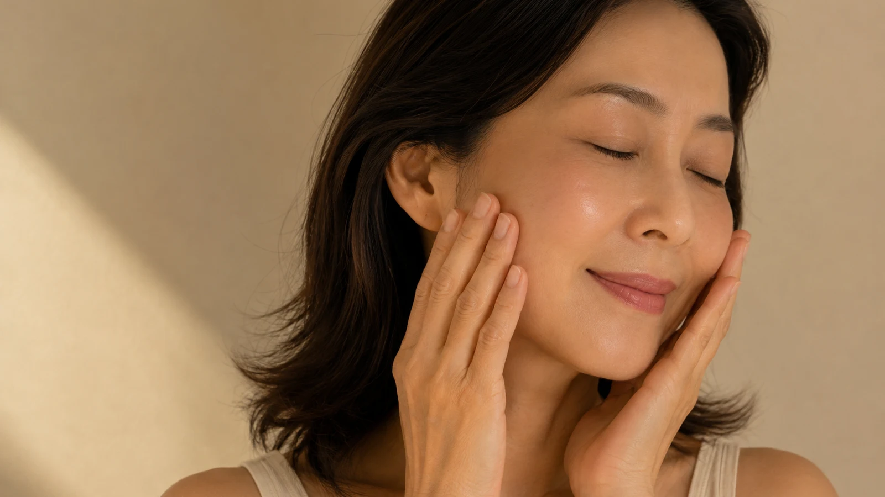
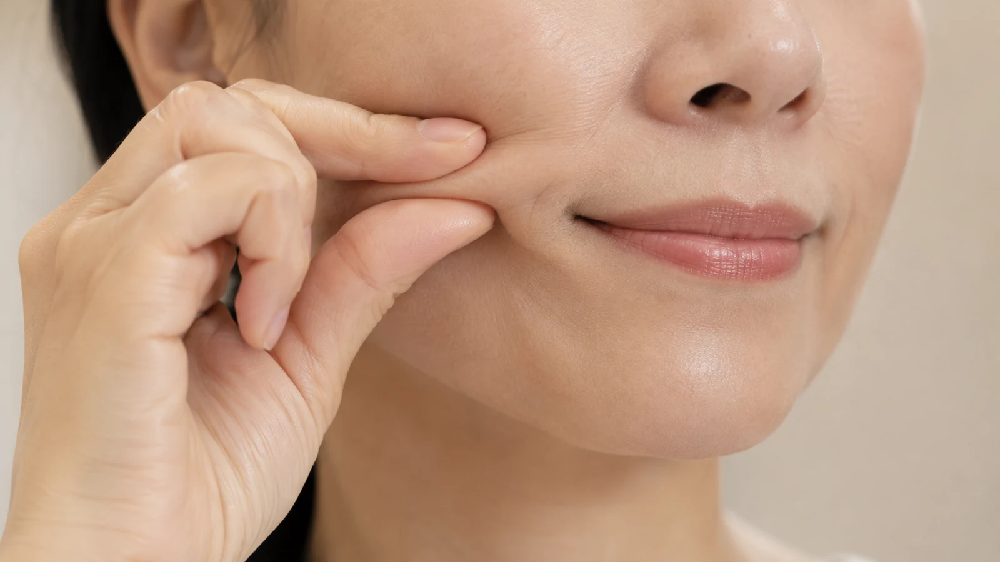

The Bojin Journal · Cheeks & Smile Lines
Puffy Cheeks and Deeper Smile Lines After a Flight? A Post-Travel Reset

You catch your reflection at baggage claim, or later in a hotel bathroom mirror, and your face looks heavier than when you left. Your cheeks feel puffy, and the lines from your nose to the corners of your mouth look deeper and more tired than usual. That's not your imagination, and it isn't permanent: it's what a day of flying does to the fluid in your face. A few quiet minutes once you land can help your cheeks look a little less puffy and more like themselves again.
Why does travel make my cheeks and smile lines look worse?
A long travel day asks a lot of your face, even though you never notice it happening. Cabin air is dry and the pressure is lower than what you're used to, and both pull water out of your skin and shift how fluid sits in your body. Add the salty snacks, the airport meal, or the extra glass of wine to pass the time, and your body holds onto more fluid than usual to try to rebalance.
Then there's the sitting. Hours in a seat, often with your head tilted forward toward a screen or a neck pillow, means the fluid that normally drains through your face and down your neck barely moves. It settles in the lowest, softest places: the cheeks, and the area right around your smile lines, which is exactly why that area can look fuller and the folds look heavier by the time you land.
None of this is new damage or a permanent change to your face. It's temporary puffiness and tension from dehydration, salt, and stillness, and that combination is exactly the kind of thing a gentle routine can help ease.
How the Bojin Method helps a travel-tired face
If you already know gua sha, you have a head start: bojin comes from the same family of Chinese hands-on face care, so the moves will feel familiar. It's still its own deliberate method. What makes it work is three things: the order you work in, the angle you hold the tool, and the exact spot you're working.
After travel, that matters more than usual, because you're not only relaxing a tight muscle, you're helping fluid that has pooled all day finally have somewhere to go. Working the cheek at the right angle, and always finishing by sweeping the fluid down and out toward the ear and neck, is what turns a few minutes into a real de-puff rather than rubbing your face.
The traditional tool is a bojin stick: a slim, polished stainless steel tool shaped to follow the face. After a long flight your bag may still be half-packed, so clean fingertips or a smooth gua sha stone work perfectly well while you learn the moves. The pressure should be the right, comfortable pressure for you: enough to feel it, never enough to hurt or drag tired skin.
Comfortable, steady pressure matters more than pressing hard or barely touching. The right pressure, held at the right angle and worked in the right order and place, and after travel always finished by draining outward and down, is what makes it work. That order, angle, and placement is the method.

Your landing-day cheek reset
Do this once you've had a chance to wash the travel off your face and drink some water: at your hotel, or once you're finally home. Rehydrating isn't a substitute for this ritual, but the two work well together: water gives your body what it needs, and this reset helps guide the puffiness that's already pooled in your face back out. Use a bojin stick or clean fingertips over a little oil or cream so nothing drags. The whole thing takes about four minutes.

Rehydrate and settle
Drink a full glass of water and rest your warm hands over your cheeks for a few slow breaths. Let your jaw unclench and your shoulders drop after a day of sitting tense in a seat. This gives your face a moment to come back before you start working it.
Read your face first
Gently press along each cheek and under your eyes and notice where it feels fullest or most tender. Travel puffiness often sits unevenly, more on the side you slept or leaned on, and what you find sets where you'll spend a little more time.
Open along the cheekbone
Place the tool or your fingertips beside your nose and glide upward and outward along the underside of the cheekbone, angling toward your ear. This is the move that starts loosening the fluid that's been sitting still all day.
Ease the smile-line zone
With small, patient strokes, work the soft tissue beside the fold, angling up toward the cheekbone rather than pressing into the crease itself. This is usually where travel puffiness reads heaviest, so take your time and keep the pressure comfortable.
Drain down and out
Finish every pass by sweeping from the cheek out toward the ear, then down the side of the neck to the collarbone. This step matters most after travel: it moves the pooled fluid somewhere, instead of shifting it around your face.
What can I expect?
Most people notice their face looks and feels less puffy fairly quickly, the smile-line area looks a little softer instead of heavy, and there's a calming feeling after a stressful travel day. Paired with water and a bit of rest, it's a nice way to mark the shift from "still traveling" to "fully here," whether that's arriving at a hotel or finally walking into your own home.
This ritual doesn't touch jet lag itself: it won't reset your sleep schedule or fix the mental fog of crossing time zones, and no amount of gentle facial work can do that. It also can't erase a smile line or undo years of change; it only eases the temporary puffiness and tension that a day of flying adds on top. And if anything feels sudden, one-sided, painful, or doesn't ease with rest, that's worth a doctor's visit, not something to work through at home.
Travel is hard on a face in ways you rarely think about until you catch yourself in a mirror. A few honest minutes once you've landed, with some water alongside them, won't undo a long flight, but they can help your cheeks look a little lighter and a lot more like you, right when you need that most.
Quick answers
Why does my face look puffier after flying?
A few things stack up at once on a flight: cabin pressure and dry air pull water out of you, salty snacks and meals make your body hold onto fluid, and hours of sitting with your head tilted forward slows the natural movement of that fluid through your face. It tends to pool in the softest places, especially the cheeks and around the nose and mouth, which is why smile lines can look heavier right after you land.
How soon after landing should I do this?
Whenever you get a quiet moment, whether that's at baggage claim, in the car, or once you're at your hotel or home. There's no rush and no window you need to catch. Many people find it works well as part of settling in, right after they've had some water and washed the travel off their face.
Does drinking water alone fix this?
Water helps, but on its own it doesn't move fluid that has already pooled in your face. Rehydrating gives your body what it needs to rebalance, while the reset ritual physically helps guide the puffiness out of your cheeks and down and away. The two work well together, not as substitutes for each other.
Will this help with jet lag too?
No, and I want to be upfront about that. This ritual doesn't touch your sleep schedule, your energy, or how foggy you feel after crossing time zones. That's jet lag, and it needs rest and time. What it can help with is the puffiness and tension sitting in your face from the flight itself, so you look a little more like yourself while the rest of you catches up.
See the order, angle, and spot for yourself
Reading about the drain-down move is one thing; watching it is another. My free 3-minute video walks you through the exact order to work in, the angle to hold, and the spots to focus on, so you're ready the next time you land somewhere tired and puffy.
Watch the free 3-min videoYu-Ting Lan is a Taiwan-based international bojin instructor and the founder of Héhé Studio. She has taught her bojin method to more than a thousand students, from complete beginners to grandmothers, across Taiwan, Hong Kong, and Malaysia.